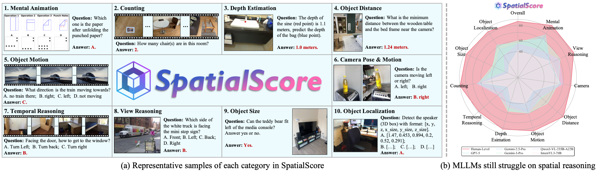
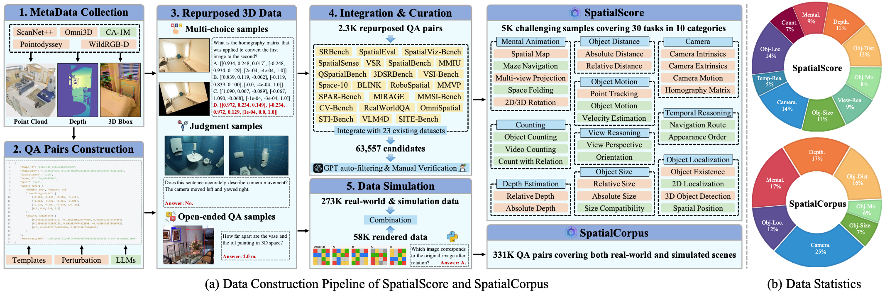
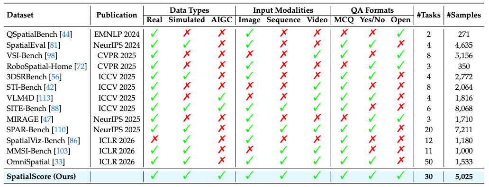
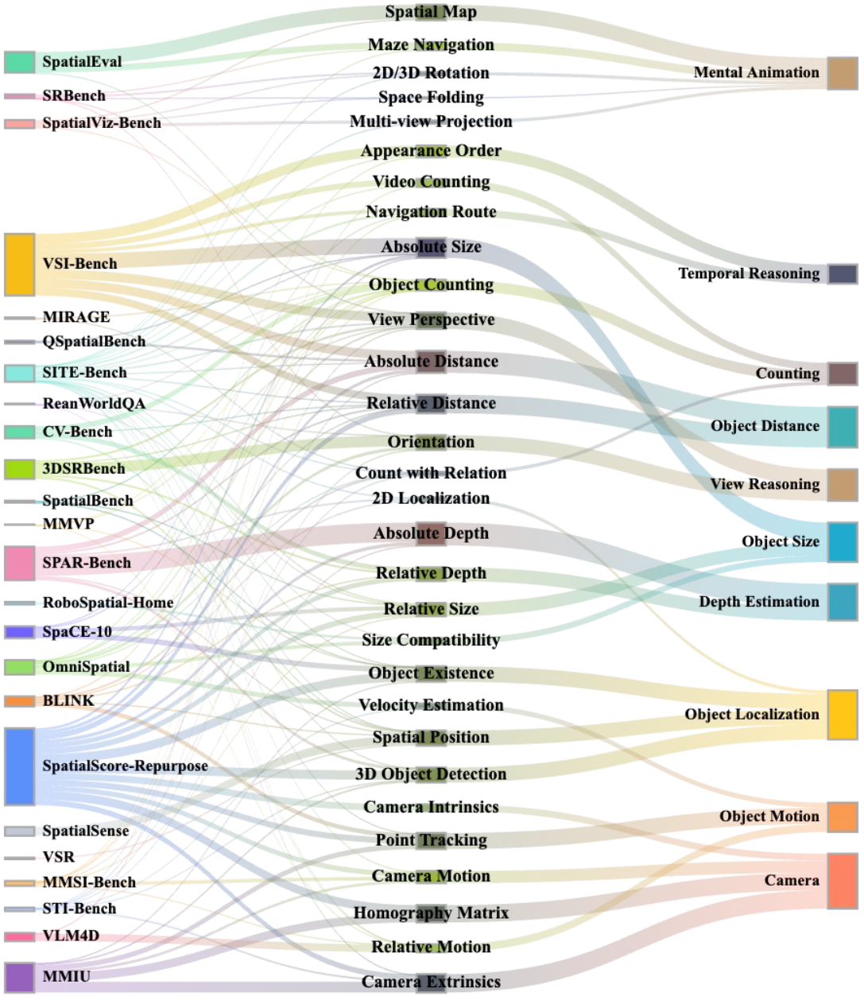
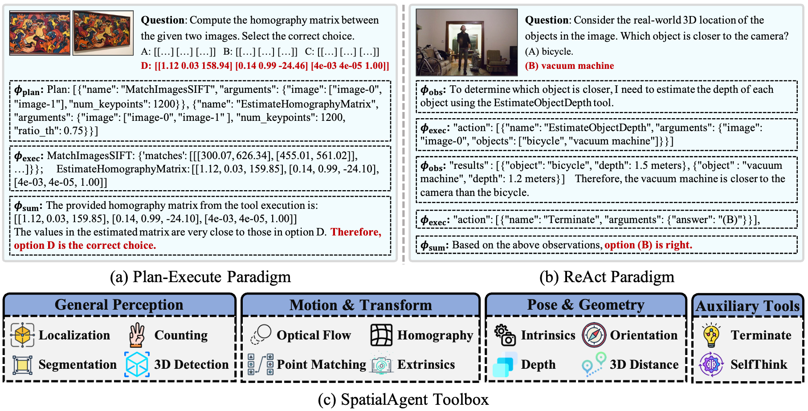
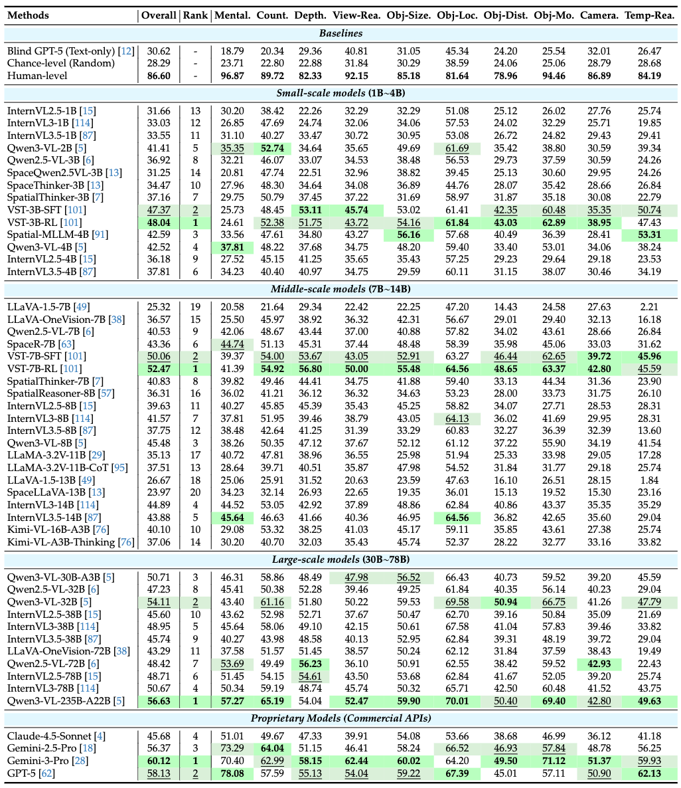
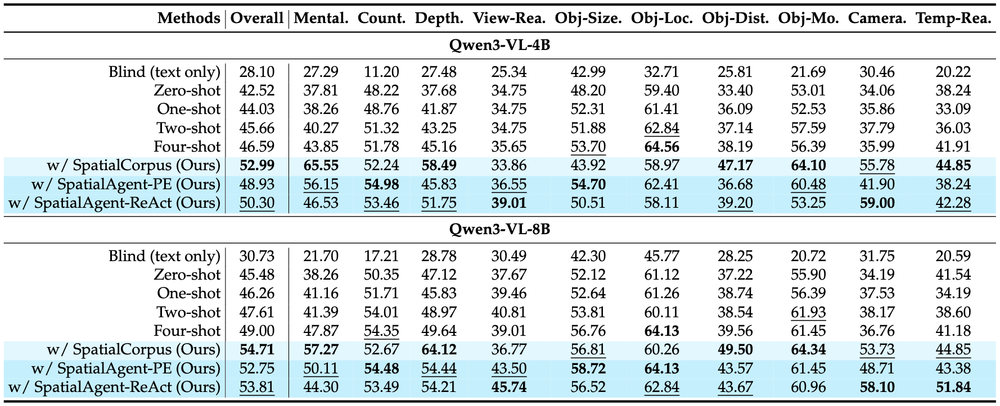
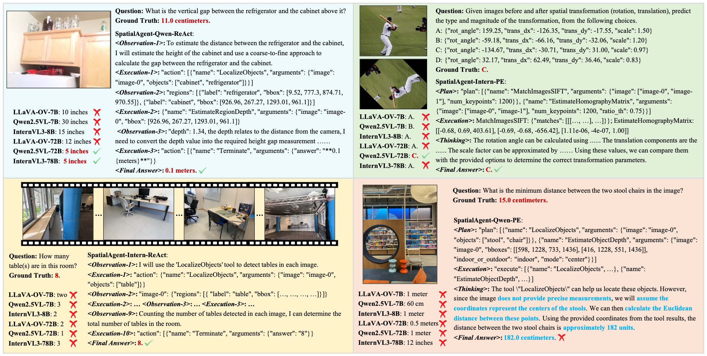

SpatialScore
Towards Comprehensive Evaluation for Spatial Intelligence
|
1School of Artificial Intelligence, Shanghai Jiao Tong University
|

Overview.
(a) Representative examples from distinct categories in SpatialScore, which thoroughly assesses spatial l intelligence capabilities via question-answering (judgment, multi-choice, and open-ended QA);
(b) Performance of state-of-the-art models compared to humans on SpatialScore.
Abstract
Existing evaluations of multimodal large language models (MLLMs) on spatial intelligence are typically fragmented and limited in scope.
In this work, we aim to conduct a holistic assessment of the spatial understanding capabilities of modern MLLMs and propose complementary data-driven and agent-based solutions.
Specifically, we make the following contributions:
(i) we introduce SpatialScore, to our knowledge, the most comprehensive and diverse benchmark for multimodal spatial intelligence to date.
It covers multiple visual data types, input modalities, and question-answering formats, and contains approximately 5K manually verified samples spanning 30 distinct tasks;
(ii) using SpatialScore, we extensively evaluate 49 representative MLLMs, revealing persistent challenges and a substantial gap between current models and human-level spatial intelligence;
(iii) to advance model capabilities, we construct SpatialCorpus, a large-scale training resource with 331K multimodal QA samples that supports fine-tuning on spatial reasoning tasks and significantly improves the performance of existing models (e.g., Qwen3-VL);
(iv) to complement this data-driven route with a training-free paradigm, we develop SpatialAgent, a multi-agent system equipped with 12 specialized spatial perception tools that supports both Plan-Execute and ReAct reasoning, enabling substantial gains in spatial reasoning without additional model training.
Extensive experiments and in-depth analyses demonstrate the effectiveness of our benchmark, corpus, and agent framework.
We expect these resources to serve as a solid foundation for advancing MLLMs toward human-level spatial intelligence.
Data Construction & Statistics

Dataset Construction and Statistics.
(a) Data construction pipeline for SpatialScore and SpatialCorpus.
Here, the metadata, curation strategies, and tasks highlighted in green are specific to the construction of SpatialScore, while those highlighted in orange are applicable to both SpatialScore and SpatialCorpus.
(b) Data distribution statistics across SpatialScore and SpatialCorpus.

Comparison with Existing Spatial Intelligence Benchmarks.
Here, Real and AIGC denote real-world samples and data generated by visual generative models (e.g., Nvidia Cosmos), respectively.
The considered input modalities include single-image, multi-image sequence, and video.

Data Sources and Task Category Statistics Visualization of SpatialScore.
Here, we denote the newly constructed samples repurposed from 3D annotations as SpatialScore-Repurpose.
SpatialAgent Architecture

Architecture and Workflow of SpatialAgent.
(a) Specialized spatial perception tools within SpatialAgent;
(b) The Plan-Execute paradigm for task decomposition and stepwise execution;
(c) The ReAct paradigm for iterative interaction and strategy refinement.
Results
Quantitative Results

Results on SpatialScore.
Mental., Count., Depth., Obj-Dist., Obj-Mo., Camera., Temp-Rea., View-Rea., Obj-Size., Obj-Loc.,
refer to Mental Animation, Counting, Depth Estimation, Object Distance, Object Motion, Camera Pose & Motion, Temporal Reasoning, View Reasoning, Object Size, and Object Localization, respectively.
Best and second-best ones are bolded and underlined in each group.

Comparisons of our Data-driven and Agent-based Approaches on SpatialScore.
Qwen3-VL is adopted in two ways:
(i) supervised fine-tuned on our SpatialCorpus;
and
(ii) as the agent core to conduct reasoning using the Plan-Execute (PE) and ReAct paradigms in SpatialAgent.
Qualitative Results

Qualitative Results.
We present the reasoning process of SpatialAgent against the direct responses of other models.
While occasional errors occur due to tool execution or interpretation mistakes, these limitations are expected to diminish as MLLMs advance.
Welcome to check out our paper for more technical details and results!
Acknowledgements
Based on a template by Phillip Isola and Richard Zhang.